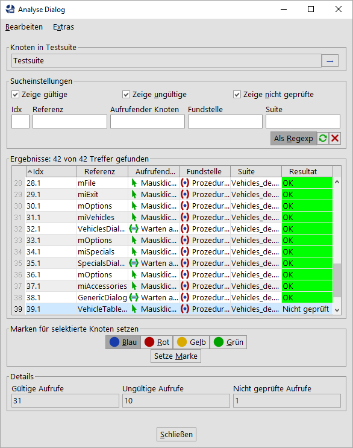

| Version 6.0.3 |
Die vorhergehenden Kapitel waren alle auf das Erstellen und Bearbeiten einzelner Testsuiten ausgerichtet. Für das Testen von umfangreichen Applikationen ist dies eventuell nicht ausreichend. Es gibt mindestens zwei Szenarios, für die das Aufteilen von Tests in mehrere Testsuiten von entscheidender Bedeutung ist:
QF-Test bietet einige nützliche Hilfsmittel für die verteilte Entwicklung mit deren Hilfe Sie Tests auf mehrere Testsuiten verteilen können. Mehrere Entwickler können damit an einzelnen Teilen von Tests arbeiten und später ihre Entwicklungen koordinieren um die 'Komponenten' ihrer Testsuiten zusammenzuführen und Bibliotheken von gemeinsam genutzten 'Prozeduren' zu erstellen.
Dieses Kapitel erläutert zunächst die verschiedenen Mechanismen zur verteilten Entwicklung und deren Zusammenspiel. Der abschließende Abschnitt enthält eine knappe und präzise Schritt-für-Schritt Anleitung, um große Testprojekte mit QF-Test umzusetzen.
Es ist möglich, 'Prozeduren' und 'Komponenten' außerhalb der aktuellen Testsuite zu referenzieren. Diese Referenzen können explizit oder implizit über Includedateien angegeben werden.
PackagePfad.Prozedur wird somit
Suite#PackagePfad.Prozedur
Eine Testsuite, die einen Knoten in einer anderen Testsuite referenziert, wird von dieser Testsuite abhängig. Bei einer Änderung des 'Namens' der 'Prozedur' oder der 'QF-Test ID' der 'Komponente' muss die verweisende Testsuite angepasst werden, ansonsten ist der Bezug falsch und die Testsuite funktioniert nicht mehr richtig. QF-Test führt solche Anpassungen automatisch durch, sofern es von der Beziehung weiß. Idealerweise sollten beide Testsuiten dem selben Projekt angehören, denn QF-Test verwaltet automatisch alle Include-Beziehungen und alle expliziten Referenzen innerhalb eines Projekts. Andernfalls muss die aufrufende Suite im Attribut 'Abhängige Dateien (umgekehrte Includes)' des 'Testsuite' Knotens der referenzierten Testsuite aufgeführt sein.
Zwar sind implizite Referenzen im Normalfall flexibler und praktischer, es kann damit aber auch schwierig sein, den Überblick zu behalten, wo sich eine referenzierte 'Prozedur' oder 'Komponente' eigentlich befindet. Feststellen kann man dies durch die über das Kontextmenü erreichbaren Funktionen "Prozedur finden" ([Strg-P]) und "Komponente finden" ([Strg-W]). Zusätzlich bietet QF-Test die Menüeinträge »Operationen«-»Referenzen explizit machen« und »Operationen«-»Referenzen implizit machen«, mit deren Hilfe Sie schnell zwischen den beiden Darstellungen umschalten können, ohne die tatsächlich referenzierten Knoten zu verändern.
Im expliziten wie im impliziten Fall kann die referenzierte Testsuite entweder ein relativer oder ein absoluter Dateiname sein. Relative Dateinamen werden zunächst relativ zur aufrufenden Suite aufgelöst. Schlägt dies fehl, werden die Dateien des Bibliothekspfades (vgl. option Verzeichnisse mit Testsuite Bibliotheken) der Reihe nach durchsucht. Verwenden Sie grundsätzlich - auch unter Windows - das '/' Zeichen als Verzeichnistrenner. QF-Test verwendet dann zur Laufzeit das korrekte Trennzeichen für das jeweilige System. Dadurch bleiben die Testsuiten auf verschiedenen Systemen lauffähig.
Hinweis Ihre 'Package' und 'Prozedur' Namen sollten die Zeichen '\' und '#' nicht enthalten. Wenn doch, müssen diese im 'Prozeduraufruf' geschützt werden. Näheres zu diesem Thema finden Sie in Abschnitt 45.5.
Wenn Sie die 'Prozedur' für einen 'Prozeduraufruf' oder die 'Komponente' für einen Event in dem Auswahldialog festlegen, bietet QF-Test alle derzeit geöffneten Testsuiten zur Auswahl an. Wenn Sie eine 'Prozedur' oder eine 'Komponente' aus einer anderen Testsuite selektieren, erzeugt QF-Test automatisch die korrekte Referenz. Bei einem späteren Ablauf des Tests wird die referenzierte Testsuite gegebenenfalls automatisch nachgeladen, falls sie sich noch nicht im Speicher befindet.
Während der Ausführung eines Tests verwaltet QF-Test alle beteiligten Testsuiten in einem Stapel. Wird eine 'Prozedur' in einer anderen Testsuite aufgerufen, kommt die neue Suite nach oben auf den Stapel. Ist die 'Prozedur' abgearbeitet, wird die Testsuite wieder vom Stapel entfernt. Wann immer während der Ausführung der 'Prozedur' ein Fenster oder eine Komponente über ihre 'QF-Test ID' angesprochen werden, durchsucht QF-Test den Stapel der Testsuiten von oben nach unten, d.h. zuerst in der aufgerufenen Suite, dann in der aufrufenden, wobei Includedateien berücksichtigt werden. Dieser Prozess ist nicht unkompliziert und Sie sind gut beraten, Includes nicht zu tief zu verschachteln. Für den Fall dass Sie bei auftretenden Problemen ein tieferes Verständnis für dieses Thema benötigen, finden Sie in Abschnitt 45.6 eine ausführliche Erklärung.
Wie bereits in Kapitel 5 mehrfach betont wurde, sind die 'Komponenten' der zentrale Bestandteil einer Testsuite. Bei Änderungen am SUT sind diese am ehesten betroffen. Wenn die Änderungen ein solches Ausmaß annehmen, dass QF-Test sich nicht mehr automatisch darauf einstellen kann, müssen die 'Komponenten' von Hand angepasst werden. Aus diesem Grund sollten Sie bei den Komponenten noch mehr als bei jedem anderen Teil der Tests auf das Vermeiden von Redundanz achten.
Wenn Sie Ihre Tests auf mehrere Testsuiten verteilen, sollten Sie daher versuchen, die 'Komponenten' in einer zentralen Testsuite vorzuhalten und diese in den anderen Testsuiten als Includedatei einzubinden. Für sehr große Applikationen kann es sinnvoll sein, die 'Komponenten' Hierarchie in Teile zu zerlegen, die jeweils einen zusammengehörenden Teil der Oberfläche des SUT repräsentieren.
Diese zentrale Bibliothek von 'Komponenten' zu verwalten ist nicht trivial. Die dabei auftretenden Probleme können wie folgt mit QF-Test gelöst werden:
Testsuiten können durch Importieren einer Testsuite in eine andere miteinander verschmolzen werden. Sie erreichen diese Funktion über den Menüeintrag »Datei«-»Importieren...«.
Sie können auswählen, welche Bereiche der Testsuite zusammengeführt werden sollen.
Um die Konsistenz von Aufrufen sicherzustellen, sollten Sie auf eine korrekte Konstellation von Includes- und Umgekehrten Includes achten. Mehr zum Arbeiten mit mehreren Testsuiten finden Sie im Kapitel 33.
Beim Importieren von Komponenten werden die beiden Komponentenhierarchien miteinander verschmolzen. Hierfür werden alle 'Fenster' und 'Komponenten' der importierten Suite in die Hierarchie der Komponenten der importierenden Suite eingefügt. 'Komponenten', die bereits vorhanden sind, werden nicht kopiert. 'QF-Test ID' Konflikte, zum Beispiel wenn identische 'Komponenten' in beiden Testsuiten verschiedene 'QF-Test IDs' oder verschiedene 'Komponenten' die selben 'QF-Test IDs' haben, löst QF-Test automatisch, indem es die 'QF-Test ID' der importierten 'Komponente' verändert.
Anschließend werden alle 'Fenster' und 'Komponenten' aus der importierten Suite entfernt. Knoten der importierten Suite, die sich auf diese 'Komponenten' bezogen haben, werden automatisch angepasst. Idealerweise sollte die importierte Suite die importierende Suite als Includedatei einbinden, so dass dabei keine expliziten Referenzen entstehen.
Analog zum Importieren von 'Komponenten' können auch 'Prozeduren', 'Packages', 'Abhängigkeiten' und 'Testfälle' sowie 'Testfallsätze' importiert werden, indem Sie 'Prozeduren' oder 'Tests' im Dialog auswählen. Achten Sie allerdings hierbei wieder auf die Konsistenz Ihrer Testsuite, z.B. macht es kaum Sinn, 'Prozeduren' ohne benutzte 'Komponenten' zu importieren.
Falls Sie nur eine bestimmte 'Prozedur' oder einen 'Testfall' importieren wollen, so können Sie den 'Einzelimport' Knopf auf den Importdialog auswählen und im erscheinenden Detaildialog den gewünschten Knoten auswählen.
Es gibt keinen goldenen Weg, um die Entwicklung von Tests zu organisieren, aber eine Vorgehensweise, die sich bewährt hat, ist die folgende:
setName() verstanden haben und dass, wo erforderlich,
eindeutige Namen nach einheitlichem Schema vergeben werden. Wenn
setName() nicht verwendet werden kann, setzten Sie
ComponentNameResolver ein, um dies zu erreichen (vgl.
Abschnitt 50.1.6). Sie sollten in der Lage sein,
neue Sequenzen ohne viel Aufwand aufzunehmen und ohne dass dabei
kleine Änderungen am SUT die Hierarchie der Komponenten völlig
durcheinanderbringen.
Natürlich kann dieses Schema auch auf mehrere Mastersuites erweitert werden, um verschiedene Teile oder Aspekte einer Applikation zu testen. Dabei kann es sich auszahlen, wenn sich die Komponentenhierarchien dieser Testsuiten möglichst wenig überschneiden, denn dadurch reduziert sich der Pflegeaufwand, wenn sich die grafische Oberfläche des SUT signifikant verändert.
Im Laufe eines Projektes wird es immer wieder zu Veränderungen, Refactoring oder Löschungen von Knoten in Ihrer Testsuite-Struktur kommen. Sie werden sicher manchmal 'Prozeduren' umbenennen oder diese löschen, falls diese nicht mehr benötigt werden.
In solchen Fällen ist es äußerst wichtig, dass Sie dabei alle Aufrufe der entsprechenden 'Prozedur' anpassen, um Ihre Testsuiten weiterhin lauffähig zu halten. Für diesen Zweck passt QF-Test beim Umbenennen oder Verschieben von Knoten alle Referenzen auf Wunsch automatisch an.
Wenn Sie nun sicherstellen wollen, dass Ihre Teststruktur keine Verweise auf nicht existierende 'Prozeduren' enthält, können Sie dies mit dem Kommando "Referenzen analysieren" bewerkstelligen. Diese statische Validierung wird Ihnen nach einer Analyse auch die Ergebnisse in einem Dialog zeigen, aus dem ersichtlich ist, welche Referenzen noch funktionieren und welche nicht mehr.
Sie können diese Analyse starten, indem Sie nach einem Rechtsklick den Menüeintrag »Weitere Knotenoperationen«-»Referenzen analysieren...« oder den entsprechenden Eintrag aus dem Hauptmenü unter »Operationen« auswählen. Diese Validierung ist auch im Batchmodus möglich.
|
|  | ||
|
| Abbildung 23.1: Ergebnis einer Analyse | ||
3.5+ QF-Test bietet Ihnen außerdem die Möglichkeit, Ihre Testsuiten auf Duplikate zu überprüfen oder nach leeren 'Packages' oder 'Prozeduren' zu suchen. Es ist auch möglich, Knoten auf ungültige Zeichen in deren Namen zu überprüfen.
Diese Art der statischen Validierung ist für 'Prozeduren', 'Abhängigkeiten', 'Testfälle', 'Testfallsätze' und 'Komponenten' und deren Referenzen verfügbar.
Während der Testentwicklung kann es immer wieder vorkommen, dass Prozeduren, die in früheren Versionen der Tests verwendet wurden, in neueren Version nicht mehr benötigt werden. Wenn Sie solche Prozeduren nicht sofort löschen, kann Ihre Testsuite wachsen. In manchen Fällen könnten Sie hier nun das Gefühl bekommen, dass Sie die Übersicht über die Prozeduren verloren haben könnten. Es gibt nun die Möglichkeit ungenutzte Prozeduren und Abhängigkeit zu finden. Hierfür klicken Sie mit der rechten Maustaste auf 'Testsuite' oder 'Prozeduren' und wählen »Weitere Knotenoperationen«-»Ungenutzte aufrufbare Knoten finden...« aus. Diese Operation liefert nun einen Report über alle ungenutzten Prozeduren und Abhängigkeiten. Jetzt können Sie entscheiden, was Sie damit tun wollen.
Manchmal ist es auch vom Vorteil solche ungenutzten Knoten einfach zu löschen, hierfür können Sie im Menü auch »Weitere Knotenoperationen«-»Ungenutzte aufrufbare Knoten entfernen« auswählen.
| Letzte Änderung: 6.9.2022 Copyright © 1999-2022 Quality First Software GmbH |